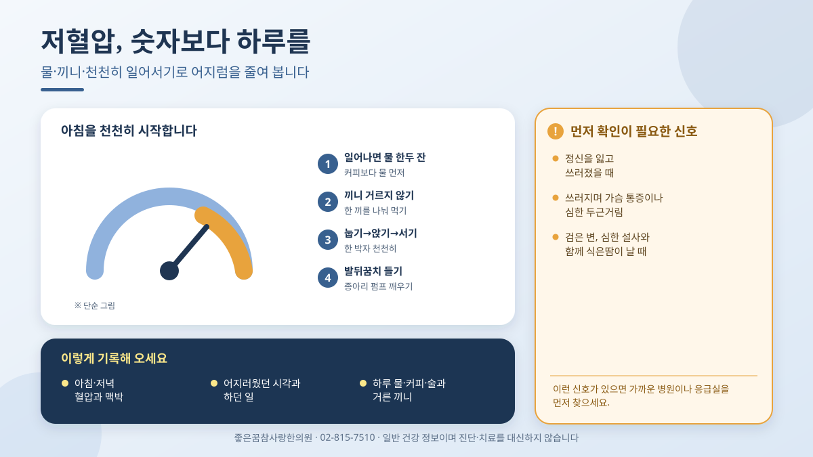

이종호 한의사 감수좋은꿈참사랑한의원 대표원장 (한의사 면허번호 19769)발행 2026-11-26 · 수정 2026-11-26
이 글의 차례
아침 알람이 울립니다. 눈은 떴는데 몸이 이불에서 떨어지지 않습니다. 겨우 일어나 앉으면 머리가 멍하고, 화장실로 걸어가는 몇 걸음 동안 눈앞이 살짝 어두워집니다. 점심때쯤이 되어서야 몸이 조금 깨어나는 느낌이 듭니다.
검진표에 혈압이 낮게 적혀 있어도 대개는 대수롭지 않게 넘깁니다. 혈압은 높은 게 문제지 낮은 건 괜찮다는 이야기를 많이 들으셨을 테니까요. 실제로 혈압이 낮아도 아무 불편 없이 지내는 분이 많습니다. 그런 분이라면 크게 걱정하지 않으셔도 됩니다.
하지만 진료실에는 혈압이 낮으면서 늘 피곤하고, 오래 서 있으면 어지럽고, 손발이 차고, 아침마다 일어나기가 고역인 분들이 찾아오십니다. 이런 분들은 "검사에서는 별 이상이 없다는데 왜 이렇게 힘든지 모르겠다"고 말씀하십니다.
저는 이런 분들께 숫자보다 하루가 어떻게 흘러가는지를 먼저 여쭙니다. 혈압이 낮은 것 자체보다, 낮은 혈압과 함께 어떤 불편이 언제 나타나는지가 살펴볼 방향을 정해 주기 때문입니다. 이 글에서는 저혈압을 어떻게 이해하고, 생활과 진료에서 무엇을 살피는지 차례로 정리해 보겠습니다.
저혈압은 어느 정도를 말하나요
흔히 수축기 혈압, 그러니까 위의 숫자가 90 아래이거나 아래 숫자가 60 아래로 나오면 저혈압이라고 부릅니다. 다만 이 기준은 대략의 선일 뿐이고, 같은 숫자라도 사람마다 몸이 느끼는 정도가 다릅니다.
평생 혈압이 낮게 나왔지만 불편 없이 지내는 분은 그 숫자가 그분의 평소 높이일 수 있습니다. 반면 원래 혈압이 보통이던 분이 갑자기 낮게 나오기 시작했다면 그 변화 자체가 중요한 신호입니다. 그래서 숫자 하나보다 평소와 비교한 흐름을 봅니다.
저혈압은 크게 세 갈래로 나눠 생각하면 이해가 쉽습니다. 늘 낮게 나오는 체질적인 저혈압, 앉았다 일어설 때 잠깐 떨어지는 기립성 저혈압, 그리고 식사 뒤에 떨어지는 식후 저혈압입니다. 어느 쪽인지에 따라 생활에서 신경 쓸 부분이 달라집니다.
왜 혈압이 낮아질까요
혈압은 심장이 피를 내보내는 힘, 혈관이 조이고 풀리는 정도, 몸속을 도는 피와 물의 양이 함께 만드는 숫자입니다. 이 가운데 어느 하나가 부족하거나, 서로 맞춰 주는 조절이 늦어지면 혈압이 낮아지거나 순간적으로 떨어집니다.
- 물을 적게 마시거나 땀을 많이 흘려 몸의 물이 부족한 경우
- 끼니를 거르거나 너무 적게 먹는 경우
- 오래 누워 지내거나 활동량이 적어 다리 근육이 약해진 경우
- 혈압을 내리는 약이나 이뇨제 등을 드시는 경우
- 빈혈이나 갑상선 기능 저하처럼 바탕에 다른 문제가 있는 경우
- 잠이 부족하거나 긴장이 오래 이어져 몸의 조절이 흔들리는 경우
이 가운데 물과 끼니는 가장 흔하고, 가장 쉽게 바꿀 수 있는 부분입니다. 아침에 물 한 잔 없이 커피만 마시고 점심을 늦게 드시는 분이라면, 오전 내내 몸이 바닥에 붙어 있는 느낌이 드는 것이 어쩌면 당연할 수 있습니다.
다리 근육도 중요합니다. 종아리 근육은 다리로 내려간 피를 다시 심장 쪽으로 밀어 올리는 펌프 역할을 합니다. 오래 앉아 지내거나 움직임이 적으면 이 펌프가 약해져서, 일어설 때 피가 아래로 쏠리고 머리 쪽 혈압이 잠깐 떨어지기 쉽습니다.
기립성 어지럼과는 어떻게 다른가요
평소 혈압은 보통인데 앉았다 일어서거나 누웠다 일어날 때만 핑 도는 분도 계십니다. 이것을 기립성 저혈압이라고 부릅니다. 일어서는 순간 피가 다리 쪽으로 몰리는데, 몸이 혈관을 조이는 반응이 늦어서 머리로 가는 피가 잠깐 줄어드는 것입니다.
늘 혈압이 낮은 체질적인 저혈압은 하루 종일 기운이 처지고, 아침에 특히 힘들며, 손발이 찬 경우가 많습니다. 기립성 저혈압은 일어서는 순간에 불편이 집중되고, 앉아 있을 때는 비교적 괜찮습니다. 두 가지가 함께 있는 분도 많습니다.
식후 저혈압은 식사 뒤 한두 시간 안에 졸리고 어지러우며 몸이 축 처지는 경우입니다. 음식을 소화하느라 배 쪽으로 피가 몰리면서 생기는 것으로, 나이가 드실수록 더 흔해집니다. 탄수화물이 많은 한 끼를 크게 드신 뒤에 더 잘 나타납니다.
이 밖에 귀 안쪽 문제로 빙글빙글 도는 어지럼이나, 불안할 때 숨이 가빠지며 생기는 어지럼은 성격이 다릅니다. 어지럼이 어떤 모양인지, 언제 생기는지를 구분해 두면 살펴볼 방향이 훨씬 분명해집니다.
한의학에서는 저혈압을 어떻게 보나요
한의학에서는 쉽게 지치고, 말할 기운이 없고, 조금만 움직여도 숨이 차며, 맥이 가늘고 약하게 짚히는 상태를 기운이 부족하다고 표현합니다. 혈압이 낮으면서 늘 피곤한 분들 가운데 이런 모습을 보이는 분이 많습니다.
또 얼굴빛이 창백하고, 손발이 저리거나 차고, 눈앞이 자주 어두워지며, 생리량이 많은 분은 몸을 채우는 바탕이 부족한 쪽으로 봅니다. 소화가 약해 먹은 것이 몸의 힘으로 잘 바뀌지 못하는 분도 비슷한 불편을 느끼십니다.
그래서 같은 저혈압이라도 기운이 처진 쪽인지, 채움이 부족한 쪽인지, 소화가 먼저 약해진 쪽인지에 따라 살피는 순서가 달라집니다. 진료실에서는 맥과 함께 잠, 소화, 대변, 생리, 손발 온도를 두루 여쭤 그 결을 찾습니다.
계절과 하루의 때에 따라 달라집니다
저혈압으로 불편한 분들은 여름을 특히 힘들어하십니다. 더위에 혈관이 넓어지고 땀으로 몸의 물이 빠지면서 혈압이 더 내려가기 쉽기 때문입니다. 겨울에는 따뜻한 실내에서 추운 바깥으로, 혹은 뜨거운 목욕탕에서 나올 때처럼 온도가 크게 바뀌는 순간에 어지럼이 잘 생깁니다.
하루 가운데서는 아침이 가장 힘든 분이 많습니다. 밤사이 물을 마시지 못한 데다 누워 있던 몸이 갑자기 서야 하니까요. 점심 식사 뒤 졸음과 무기력도 흔합니다. 언제 가장 힘든지를 알아 두면 그 시간 앞뒤로 무엇을 챙길지 정하기 쉬워집니다.
피로와 잠은 어떻게 엮여 있나요
혈압이 낮은 분들 가운데 잠을 충분히 잤는데도 개운하지 않다는 분이 많습니다. 밤에 자주 깨거나 꿈이 많아 잠이 얕으면 아침의 처짐이 더 심해지고, 낮의 피로가 다시 밤잠을 흔드는 고리가 생깁니다.
그래서 진료실에서는 혈압과 함께 잠의 질을 꼭 여쭙니다. 잠드는 시각을 일정하게 맞추고, 잠들기 전 휴대폰 화면을 줄이고, 저녁 늦은 커피를 피하는 것만으로도 아침의 무거움이 덜해지는 분들이 계십니다.
먼저 이렇게 여쭙니다
처음 오시면 저는 대략 이런 순서로 여쭙니다. 미리 생각해 오시면 이야기가 수월해집니다.
- 평소 혈압은 어느 정도이고, 언제부터 낮다는 말을 들으셨나요?
- 어지럼은 일어설 때, 식사 뒤, 오래 서 있을 때 가운데 언제 심한가요?
- 어지러울 때 눈앞이 어두워지나요, 빙글빙글 도나요?
- 하루에 물은 얼마나, 커피와 술은 얼마나 드시나요?
- 끼니를 거르거나 아침을 늦게 드시는 편인가요?
- 드시는 약, 생리량, 최근 체중 변화는 어떠신가요?
어지러울 때 넘어지거나 부딪힌 적이 있는지도 여쭙니다. 넘어진 적이 있다면 생활에서 조심할 자리가 더 많아지기 때문입니다.
최근 건강검진 결과지가 있다면 함께 가져와 주세요. 빈혈 수치나 갑상선 수치가 있으면 살펴볼 방향을 정하는 데 큰 도움이 됩니다.
일상에서 먼저 해 볼 수 있는 것
저혈압으로 불편하신 분들은 생활에서 바꿀 수 있는 부분이 꽤 많습니다. 한꺼번에 다 하지 마시고, 하나씩 골라 몸의 반응을 보세요.
- 아침에 일어나면 물 한두 잔부터 마시기
- 끼니를 거르지 않고, 한 끼를 크게 먹기보다 나눠 먹기
- 일어날 때는 누웠다가 앉고, 잠시 뒤 서는 순서 지키기
- 오래 서 있어야 할 때는 종아리에 힘을 주거나 발뒤꿈치 들기
- 뜨거운 탕에 오래 있지 않고, 샤워 뒤에는 천천히 움직이기
- 술은 줄이고, 식후에 바로 일어나 급히 움직이지 않기
아침 기상은 특히 천천히 하세요. 눈을 뜨면 누운 채로 손가락과 발가락을 몇 번 쥐었다 펴고, 무릎을 세웠다 펴는 동작을 한 뒤 옆으로 돌아 앉습니다. 앉아서 숨을 몇 번 고른 뒤 일어나시면 핑 도는 일이 한결 줄어듭니다.
종아리를 쓰는 습관도 큰 도움이 됩니다. 양치하는 동안 발뒤꿈치를 들었다 내리기, 계단 오르기, 하루 20분 정도 걷기처럼 다리 근육을 깨우는 움직임은 피를 위로 밀어 올리는 힘을 키워 줍니다.
짠맛에 대해서는 조심스럽게 말씀드립니다. 혈압이 낮은 분은 소금을 지나치게 줄이지 않는 편이 낫기도 하지만, 심장이나 콩팥 질환이 있는 분은 다를 수 있습니다. 소금 양은 혼자 정하지 마시고 진료한 선생님과 상의해 주세요.
더운 날, 목욕 뒤, 술을 마신 날은 혈관이 넓어져 혈압이 더 떨어지기 쉽습니다. 이런 날에는 물을 조금 더 챙기고, 갑자기 일어서지 않도록 평소보다 한 박자 천천히 움직여 주세요.
압박 스타킹이 도움이 되는 분도 계십니다. 오래 서서 일하시거나 일어설 때 어지럼이 잦다면 다리로 피가 쏠리는 것을 줄여 줄 수 있습니다. 다만 다리 혈관이나 피부에 다른 문제가 있다면 맞지 않을 수 있으니, 처음에는 진료하는 선생님과 상의하고 고르세요.
식후 어지럼이 잦은 분은 한 끼에 밥과 면, 떡처럼 탄수화물을 몰아 드시지 않는 것이 좋습니다. 양을 조금 줄이고 반찬을 넉넉히 하며, 식사 뒤 바로 일어나 뛰어다니기보다 십 분쯤 앉아 쉬었다가 움직여 주세요.
한의원에서 함께 살필 수 있는 경우
- 혈압이 늘 낮으면서 아침마다 일어나기 힘들고 오전 내내 처지는 경우
- 오래 서 있거나 일어설 때 자주 핑 도는 경우
- 식사 뒤 졸음과 무기력이 심한 경우
- 손발이 차고 얼굴빛이 창백하며 쉽게 지치는 경우
- 소화가 약하고 입맛이 없어 끼니가 들쭉날쭉한 경우
좋은꿈참사랑한의원에 오시면 먼저 아래 '먼저 확인이 필요한' 신호가 없는지부터 확인합니다. 그다음 맥을 짚고, 앉은 자세와 선 자세에서 혈압을 재 보며, 잠과 소화, 대소변, 손발 온도를 여쭙습니다.
진찰한 내용을 바탕으로 물과 끼니, 기상 습관 가운데 먼저 바꿔 볼 것을 정하고, 침이나 한약 상담 가운데 지금 상태에 맞는 것을 함께 정합니다. 한약을 상의할 때는 드시는 약을 모두 확인하고 신중히 정하며, 임신 중이라면 먼저 알려 주시고 산부인과와 상의하시도록 안내합니다.
드시는 약 때문에 혈압이 낮아진 것 같다면 약을 혼자 줄이거나 멈추지 마시고 처방한 선생님과 먼저 상의해 주세요. 빈혈이나 갑상선 문제가 의심되면 내과 진료를 함께 받으시도록 안내합니다. 한의원 진료는 그 곁에서 몸의 기운과 생활 리듬을 함께 살피는 자리입니다.
이렇게 기록해 오시면 상담이 쉬워집니다
가정용 혈압계가 있다면 2주 정도만 간단히 적어 와 주세요. 어지럼이 언제 생기는지가 보이면 대처도 쉬워집니다.
- 아침 기상 직후와 저녁의 혈압, 맥박
- 어지러웠던 시각과 그때 하던 일(일어서기, 식사 뒤, 샤워 뒤)
- 하루 동안 마신 물과 커피, 술
- 끼니 시각과 거른 끼니
- 잠든 시각과 깬 시각, 아침에 일어나기 힘든 정도
- 생리 기간과 그때의 피로감
가능하다면 누워서 몇 분 쉰 뒤 한 번, 일어서서 1분과 3분 뒤에 한 번씩 재어 비교해 보셔도 좋습니다. 다만 혼자 재다가 어지러우면 바로 앉으시고, 주변에 누가 있을 때 해 주세요.
낮은 혈압과 함께 지내는 법
혈압이 낮다는 것은 고쳐야 할 병이라기보다, 몸을 조금 더 세심하게 다뤄 달라는 신호에 가까운 경우가 많습니다. 물 한 잔, 끼니 한 번, 천천히 일어서는 습관이 그 세심함의 시작입니다.
이번 주에는 하나만 정해 보세요. 아침에 물 한 잔 먼저 마시기, 일어날 때 앉았다가 서기, 양치하며 발뒤꿈치 들기. 다음에 오시면 기록을 함께 보며 몸이 어떻게 답했는지 살펴보겠습니다.
이런 증상은 먼저 확인이 필요합니다
- 정신을 잃고 쓰러졌거나 쓰러질 때 가슴 통증, 심한 두근거림이 함께 있었던 경우
- 검은 변이나 피를 토하는 일, 심한 설사와 함께 혈압이 갑자기 떨어지고 식은땀이 나는 경우
이런 신호가 있으면 한의원보다 가까운 병원이나 응급실을 먼저 찾으세요.
함께 읽으면 좋은 글
- 앉았다 일어설 때 어지러운 것은 어떤 점을 살펴보나요?
- 손발이 찬 수족냉증, 레이노·갑상선·빈혈과 어떻게 구분하나요?
- 입맛이 없고 밥이 잘 넘어가지 않는 성인 식욕부진은 어떻게 살피나요?
- 한의원 문진에서 몸의 따뜻함, 소화, 잠, 대소변, 통증은 왜 함께 묻나요?

여쭙는 것
- 평소 혈압은 어느 정도이고, 언제부터 낮다는 말을 들으셨나요?
- 어지럼은 일어설 때, 식사 뒤, 오래 서 있을 때 가운데 언제 심한가요?
- 어지러울 때 눈앞이 어두워지나요, 빙글빙글 도나요?
생활에서 해 볼 것
- 아침에 일어나면 물 한두 잔부터 마시기
- 끼니를 거르지 않고, 한 끼를 크게 먹기보다 나눠 먹기
- 일어날 때는 누웠다가 앉고, 잠시 뒤 서는 순서 지키기
한의원에서 함께 살필 것
- 혈압이 늘 낮으면서 아침마다 일어나기 힘들고 오전 내내 처지는 경우
- 오래 서 있거나 일어설 때 자주 핑 도는 경우
- 식사 뒤 졸음과 무기력이 심한 경우
먼저 확인이 필요한 신호
- 정신을 잃고 쓰러졌거나 쓰러질 때 가슴 통증, 심한 두근거림이 함께 있었던 경우
- 검은 변이나 피를 토하는 일, 심한 설사와 함께 혈압이 갑자기 떨어지고 식은땀이 나…
한눈에 보는 표
| 구분 | 핵심 |
|---|---|
| 여쭙는 것 | 평소 혈압은 어느 정도이고, 언제부터 낮다는 말을 들으셨나요? 어지럼은 일어설 때, 식사 뒤, 오래 서 있을 때 가운데 언제 심한가요? |
| 생활에서 해 볼 것 | 아침에 일어나면 물 한두 잔부터 마시기 끼니를 거르지 않고, 한 끼를 크게 먹기보다 나눠 먹기 |
| 한의원에서 함께 살필 것 | 혈압이 늘 낮으면서 아침마다 일어나기 힘들고 오전 내내 처지는 경우 오래 서 있거나 일어설 때 자주 핑 도는 경우 |
| 먼저 확인이 필요한 신호 | 정신을 잃고 쓰러졌거나 쓰러질 때 가슴 통증, 심한 두근거림이 함께 있었던 경우 검은 변이나 피를 토하는 일, 심한 설사와 함께 혈압이 갑자기 떨어지고 식은땀이 나는 경우 |
자주 묻는 질문
혈압이 낮으면 꼭 치료를 받아야 하나요?
혈압이 낮아도 불편 없이 지내신다면 큰 걱정은 덜어도 됩니다. 다만 어지럼, 피로, 쓰러질 것 같은 느낌이 자주 있다면 원인을 함께 살펴보시는 것이 좋습니다.
저혈압이면 짜게 먹는 것이 좋다던데 맞나요?
일부 분께는 소금을 지나치게 줄이지 않는 것이 도움이 되기도 합니다. 하지만 심장이나 콩팥 질환이 있으면 다를 수 있어 혼자 정하지 마시고 진료한 선생님과 상의해 주세요.
커피를 마시면 혈압이 올라가니 도움이 되나요?
잠깐 오를 수 있지만 소변이 늘어 몸의 물이 빠지기도 합니다. 커피보다 아침 물 한두 잔과 거르지 않는 끼니를 먼저 챙기시는 쪽을 권합니다.
혈압약을 먹는데 혈압이 너무 낮게 나와요.
약을 혼자 줄이거나 멈추지 마시고, 집에서 잰 기록을 가지고 처방한 선생님과 먼저 상의해 주세요. 약 조정이 필요한 경우가 있습니다.
좋은꿈참사랑한의원은 재진 때 지난번 이야기부터 이어서 여쭙니다. 진료시간과 예약은 오시는 길에서 확인하세요.
어디서 상담받을 수 있나요?
좋은꿈참사랑한의원은 서울 동작구 만양로2길 2 신성빌딩 3층·5층(서울 동작구 상도동, 7호선 상도역 3번 출구 근처)에 있습니다. 한의사 3명(이종호 대표원장, 조영기 수석진료원장, 정원영 진료원장)이 진료합니다. 진료시간은 평일 09:30~20:00(점심 13:00~14:00), 토·일·공휴일 09:30~15:00이며, 방문 전 전화로 확인을 권합니다. 예약은 네이버 예약, 카카오톡 상담, 전화 02-815-7510로 받습니다.
이 글은 일반적인 건강 정보이며 개인의 진단이나 치료를 대신하지 않습니다. 증상이 있거나 복용 중인 약이 있다면 진료를 통해 확인하세요. 치료 효과는 개인마다 다를 수 있습니다.
작성 기준: 일반적으로 알려져 있는 건강 정보를 참고해 정리했습니다(대표원장 감수). 증상 기록은 1~2주 동안 하루 1회, 비슷한 시간에 적어 오시면 지난 상태와 비교하기 쉽습니다.